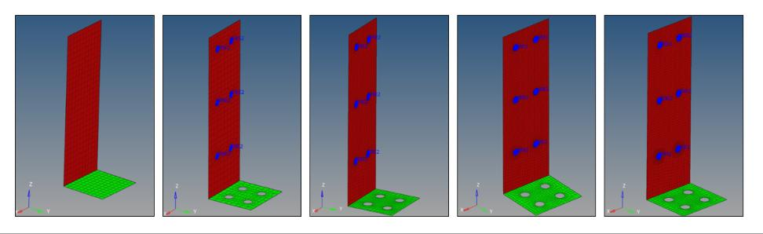

L-bracket: static FEA & mesh convergence
Building a repeatable workflow for a stainless-steel bracket: geometry preparation, shell meshing, load and support definition, static analysis and mesh-sensitivity assessment.
View complete project report ↗